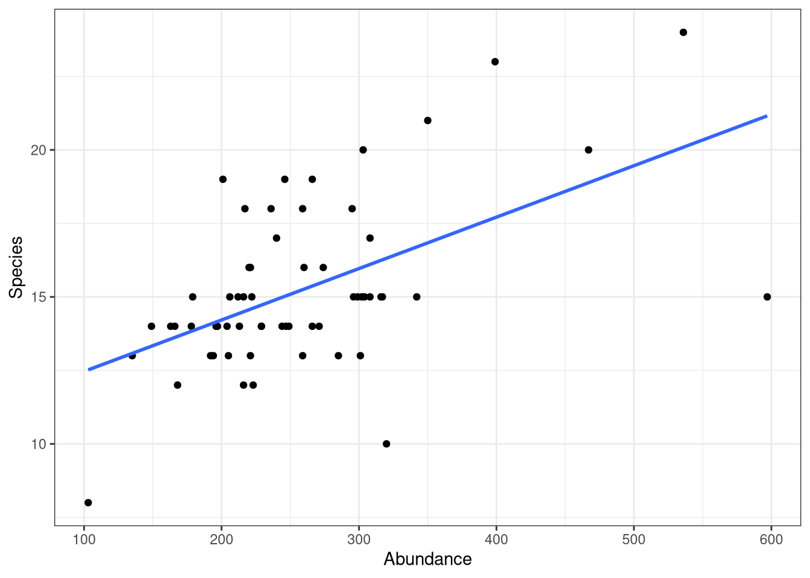
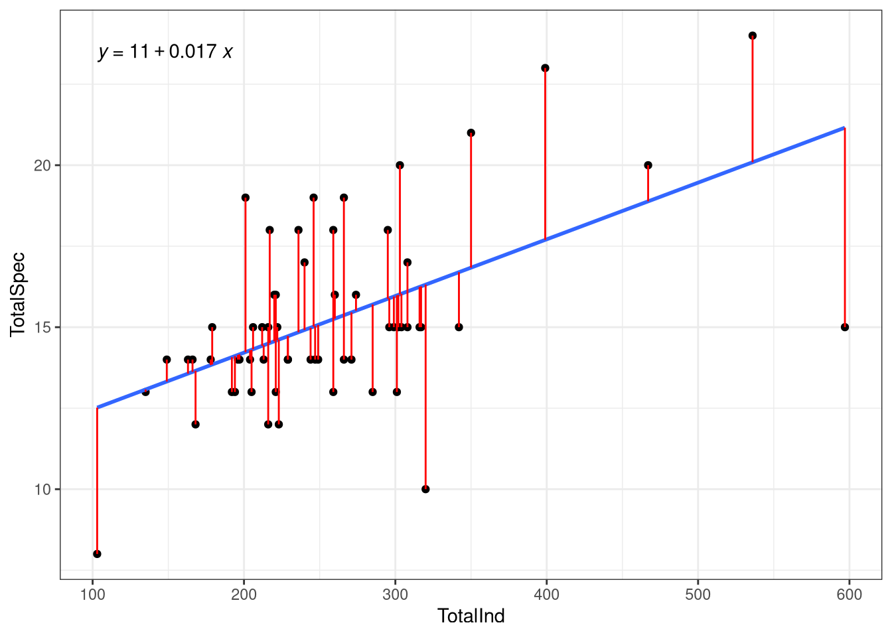
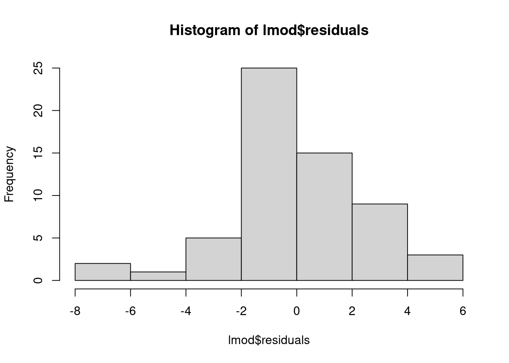

12 Linear Models
Linear models describe the relation between two variables. In a non-technical description we can think about linear model like:
Find a line that is as close as possible to all the points of a scatterplot.

For example, we can use a linear model to depict the relation between the amount of samples animals and the number of different species found in a given area. To create a linear model, we need two vectors (here as two columns of a data.frame) with the matching data pairs (Abundance and Species Number). The lm function then need a formula with the vector/column names separated by ~.
Think about the ~ like as a function of. So lm(Species ~ Abundance) means: Give me the number of species as a function of species abundance.
library(dplyr)
bd = read.csv("data/crop_species.csv")
bd = bd %>% mutate(TotalInd = AraInd + CaraInd + IsoMyrInd,
TotalSpec = AraSpec, CaraSpec, IsoMyrSpec)
lmod = lm(bd$TotalSpec ~ bd$TotalInd)
lmod##
## Call:
## lm(formula = bd$TotalSpec ~ bd$TotalInd)
##
## Coefficients:
## (Intercept) bd$TotalInd
## 10.71651 0.0174912.1 Linear Model Summary
Calling the model returns the intercept and slope. To get a more useful output use the summary function.
In the following we will go over the output of the summary function on linear models.
The explanations are mostly taken from this blog entry: https://feliperego.github.io/blog/2015/10/23/Interpreting-Model-Output-In-R
summary(lmod)##
## Call:
## lm(formula = bd$TotalSpec ~ bd$TotalInd)
##
## Residuals:
## Min 1Q Median 3Q Max
## -6.3136 -1.2481 -0.2235 1.1245 5.3046
##
## Coefficients:
## Estimate Std. Error t value Pr(>|t|)
## (Intercept) 10.716507 0.991039 10.813 1.58e-15 ***
## bd$TotalInd 0.017491 0.003656 4.784 1.22e-05 ***
## ---
## Signif. codes: 0 '***' 0.001 '**' 0.01 '*' 0.05 '.' 0.1 ' ' 1
##
## Residual standard error: 2.416 on 58 degrees of freedom
## Multiple R-squared: 0.2829, Adjusted R-squared: 0.2706
## F-statistic: 22.89 on 1 and 58 DF, p-value: 1.221e-0512.1.2 Residuals
- summary statistic of the model error
- “How far away are the real values from the model?”
- should follow a normal distribution (e.g. by plotting a histogram)

hist(lmod$residuals)
12.1.3 Coefficients
12.1.3.1 Estimate
- again the slope and intercept
- we can expect to observed at least 10.7 different species on a plot (if we collect 103 animals)
- for each additional animal observed, the species count increases by 0.017
12.1.3.2 Std. Error
- the expected error of the coefficients
- for each additional animal observed, the species number increases by 0.017 +- 0.0037
12.1.3.3 t value
- how many standard deviation is the std. error away from zero?
- far away from zero is better. Reduces the probability that the result is due to chance
- usually not interpreted
12.1.3.4 Pr(>|t|)
- probability that the observed value is larger than t
- small value means that there is a high chance that the relation is not based on chance
- p values < than 0.05 is the convention that we can neglect the H0 hypothesis (the model actually depicts a relation)
12.1.3.6 Residuals standard error
- the average deviation of the real values from the model value
- degree of freedom: on how many observations is this value based on?
12.2 Linear Model Plot
Plotting the linear model gives you 4 different figures that indicate if the model is statisically valid in the first place, i.e. if the residuals follow a normal distribution and if they are homoscedatic.
12.2.1 Residuals vs. Fitted
- Is it actually a linear relation?
- Points randomly scattered around a horizontal line indicates this
12.2.2 Normal Q-Q
- Are the residuals normally distributed?
- Points on the 1-1 line indicates this
- Depicted are the actual residuals vs. a theoretical normal distribution